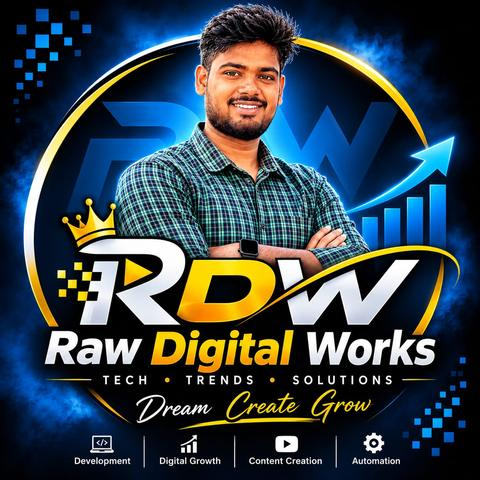

Careers
Resume templates, 200 interview answers, cover letters and a LinkedIn guide.
Shop career kitsCareer kits, AI guides, automation tools and courses - simple, affordable and made for India. Start with our job-search kits today.
INSTANT DOWNLOAD · UPI ACCEPTED · NEW PRODUCTS EVERY MONTH

Careers is live now. More categories are on the way.
Resume templates, 200 interview answers, cover letters and a LinkedIn guide.
Shop career kitsPractical, India-focused e-books on careers, money and digital skills.
Follow for the launchStep-by-step guides to earn online with AI tools - honest, no get-rich-quick claims.
Follow for the launchReady-made automations and templates that save hours of work every week.
Follow for the launchApp building with AI and how to make AI work for you - beginner friendly.
Follow for the launchStart free. Upgrade when you are ready for interviews.
Fresher ATS resume template (.docx) + 10 AI prompts for job hunting (PDF).
Everything you need from resume to offer letter.
Practical, India-focused and updated for 2026.
The exact layout, headings and keywords that get past resume filters.
INTERVIEWA 60-second formula with fresher and experienced examples.
HR ROUNDWhat interviewers really check — and how to answer.
Simple, affordable digital products made in India. Career kits are live now; e-books, guides on making money with AI, automation tools and AI courses (app building, making AI work for you) are coming next.
Follow Raw Digital Works on Instagram or Facebook, or subscribe on YouTube. Every launch is announced there first.
Most companies use Applicant Tracking System (ATS) software to scan resumes before a recruiter sees them. An ATS-friendly resume uses one column, standard headings and plain text (no tables, photos or text boxes) so the software can read your skills and experience correctly.
Yes. The Career Starter Kit (fresher ATS resume template + 10 AI job-hunting prompts) is a free instant download — no payment, no sign-up.
Pay ₹299 securely on Razorpay (UPI, cards, net banking). The Career Pack is emailed to the address you enter at checkout within a few minutes.
Freshers and campus placements, IT and software roles, non-IT roles like sales, operations, accounts and banking, and government-job personality interviews.
Yes. The templates are .docx files that open in MS Word, Google Docs or WPS Office on phone or computer.
No one can honestly guarantee a job. Our kits help you present yourself clearly and prepare well — the interview result depends on you and the employer.